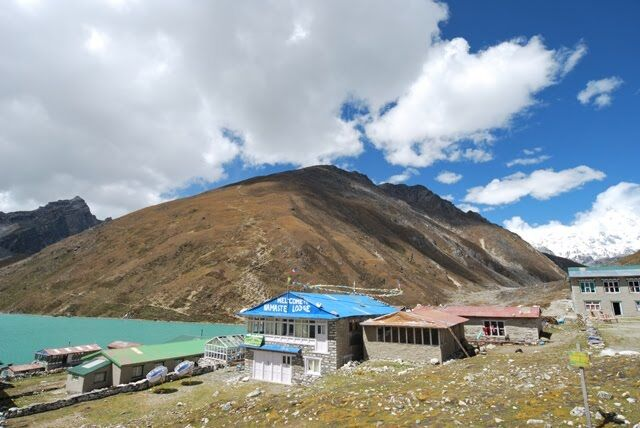
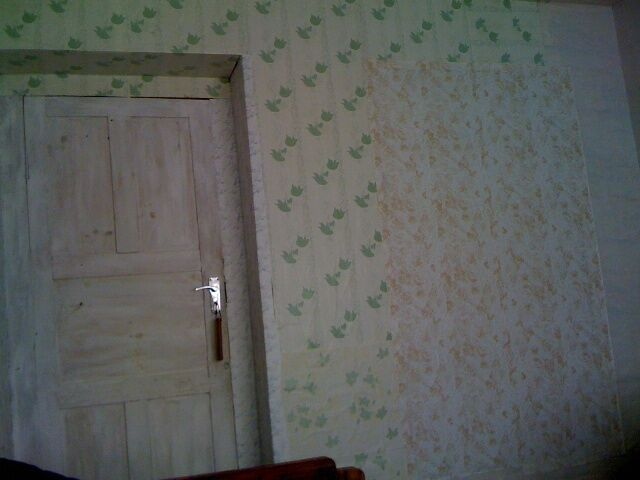
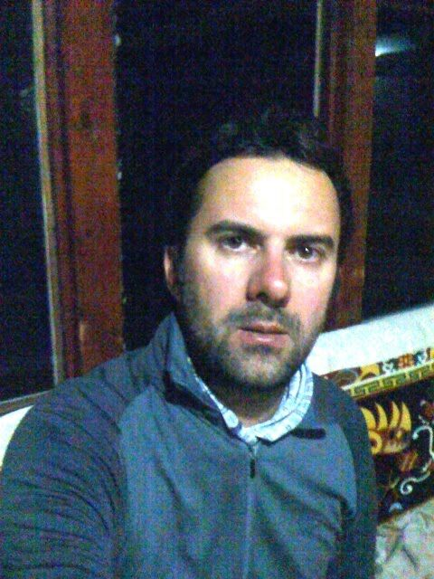
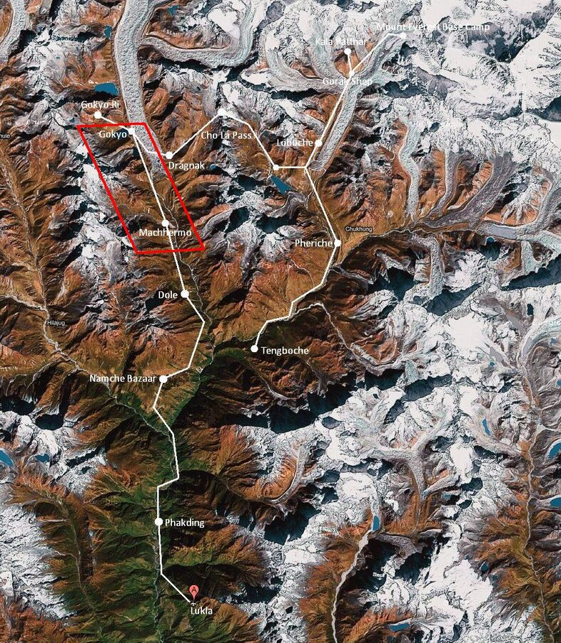

Gokyo lies at 4,750 m, almost as high as Mont Blanc, the highest point in the Alps. The village sits at the foot of Gokyo Ri, the first 5,000-metre peak we'll climb on this tour tomorrow. It looks unspectacular (see photo with lake), but apparently you get a fantastic view of the other mountains.
Today's tour began as always with a quick wash and breakfast. The weather was wonderful, so we set off happily for Gokyo at 8:00. The first part was again a steep climb, followed by a longer, more or less flat stretch. The snow-covered 7,000- and 8,000-metre peaks are with us everywhere now. It's an incredible sight. Although we're already walking at over 4,000 m, it looks as if we were in the valley.

The landscape is barren, green and stony. You hike along the raging Dudh Koshi river, which only half fills its bed full of white boulders. At first you're a good 100 m above the river. Later you go down and walk alongside it. Actually you don't go down, because the river rises in the mountains and flows into the valley – so you're walking uphill. The path is very stony and very difficult to walk. Everywhere small stones are piled on top of larger boulders. They're probably meant to mark the path when it's snowed over.
The group doesn't walk at a uniform pace. Some go fast, others slower. Everyone has their own pace. Breathing is hard too. When a small incline comes, you quickly run out of breath. You take lots of breaks anyway, because you have to drink – or eat an energy bar.

After about 3.5 hours we arrived in Gokyo. I was already worn out, as I haven't slept well the last few nights. And breakfast this morning hadn't exactly been lavish. But three of our group, Harald, Stefan and Alexander, still climbed Gokyo Ri because the weather was good.
The rest of us, Ralf, Sandra and I, stayed at the lodge, had lunch and rested. The three climbers came back after about 3.5 hours. The weather had apparently clouded over in the meantime, so the view wasn't great. And it was cold too.
Tomorrow morning is our planned ascent to the summit. We meet at 4:00 for tea. Then it's 600 m up, and hopefully we'll see the sunrise. Ralf doesn't want to come along, though.

Our lodge, the Gokyo Resort, is right on Gokyo Lake and is quite decent. Ralf and I each treated ourselves to a double room with our own toilet. The walls are of course plywood again – but this time papered. Don't ask me how: they just took any old leftovers and glued them together. All rather adventurous, but compared with the previous lodgings it's good. Our standards have become very low by now.
The lodge also has a phone, so Ralf could call Patrizia and I could call Yesim. The first sign of life from us in several days.
Until an early dinner we played Yahtzee. After dinner everyone went to bed early.

In the room it's always a similar routine: I lay out my things for the next day and pack the rest into the various bags as far as possible. I slip into the sleeping bag in long leggings, wool socks and a fleece sweater, because it's terribly cold. There's no heating and, if anything, just a light with a small LED bulb.
Once again I didn't shower today, because time was too short and it's also pretty cold. The shower would have been next to/below the common room.
Right, lights out now, because we have to get up early.
